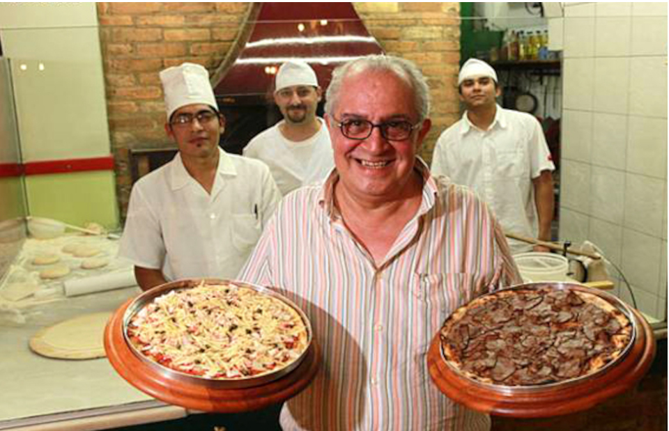
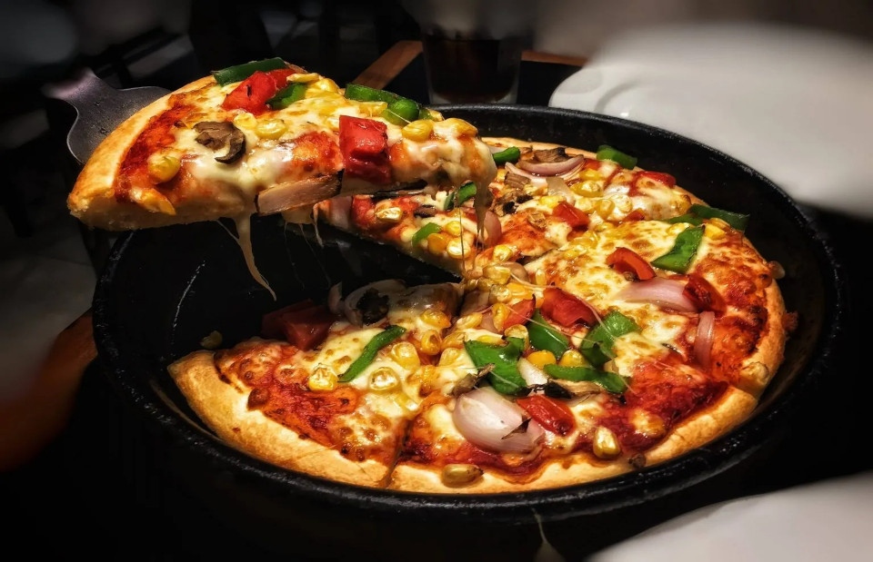
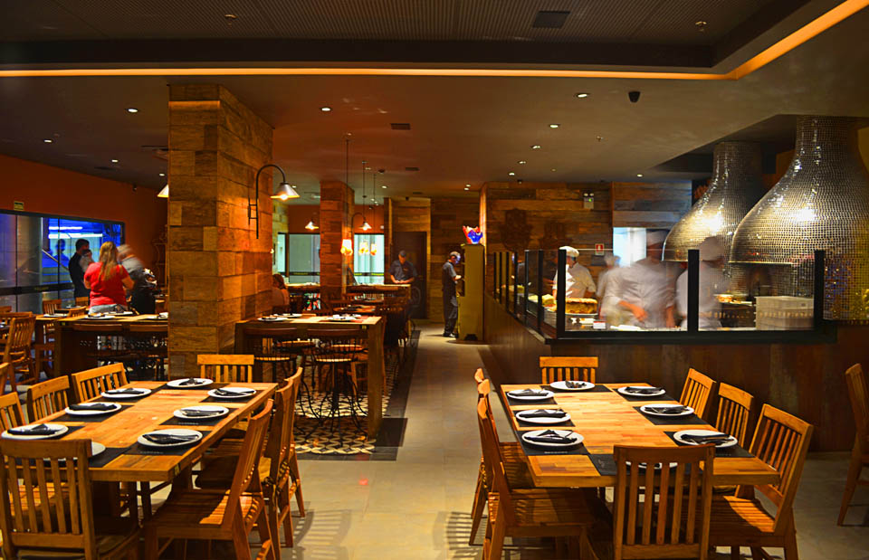
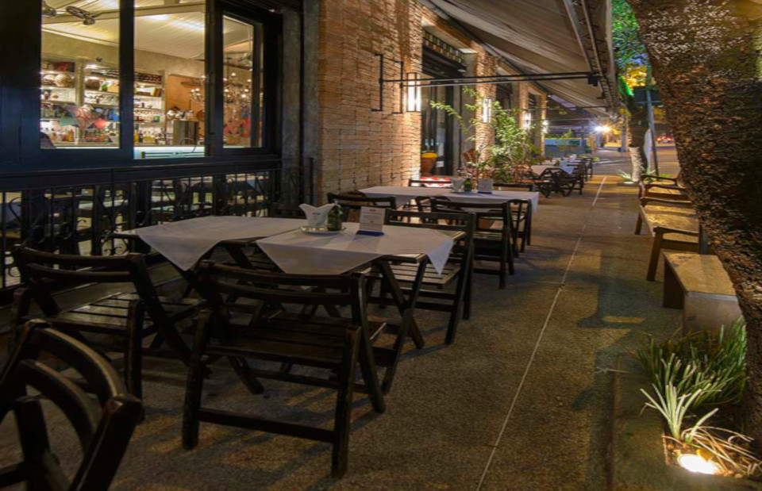

A Pizzaria Buonna Pizza abriu as portas em 1910, fundada pelo pizzaiolo Carmino Corvino quando este veio morar no Brasil, no tradicional bairro paulistano conhecido como Brás.
Nosso foco é:
VENHA CONHECER O BUONNA PIZZA!!



